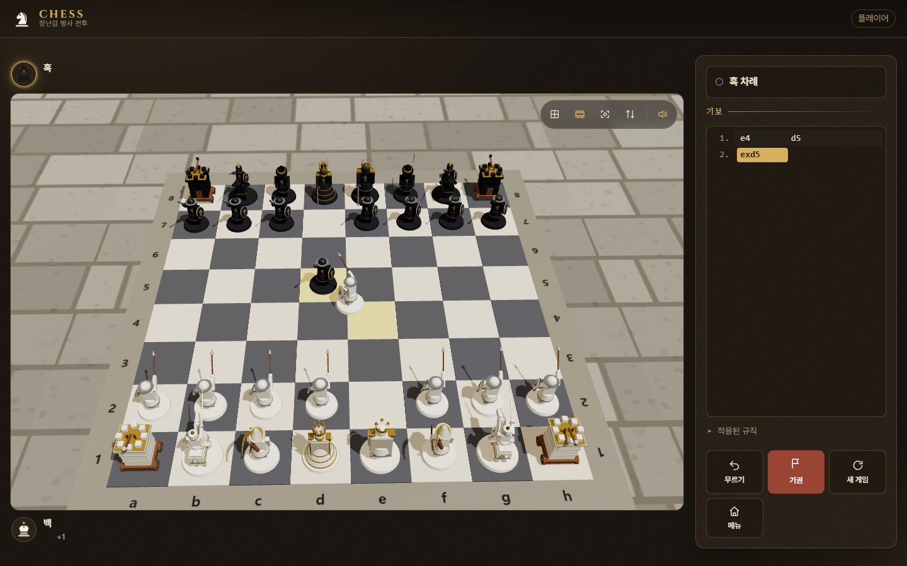
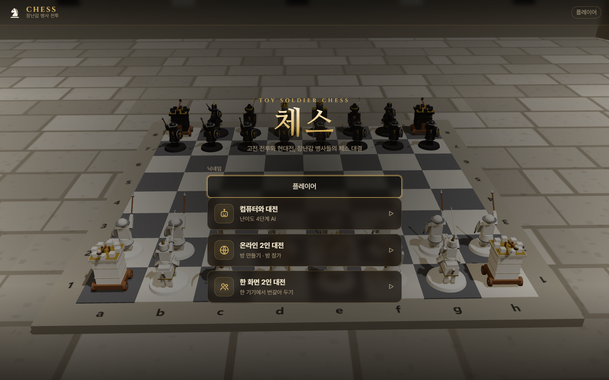
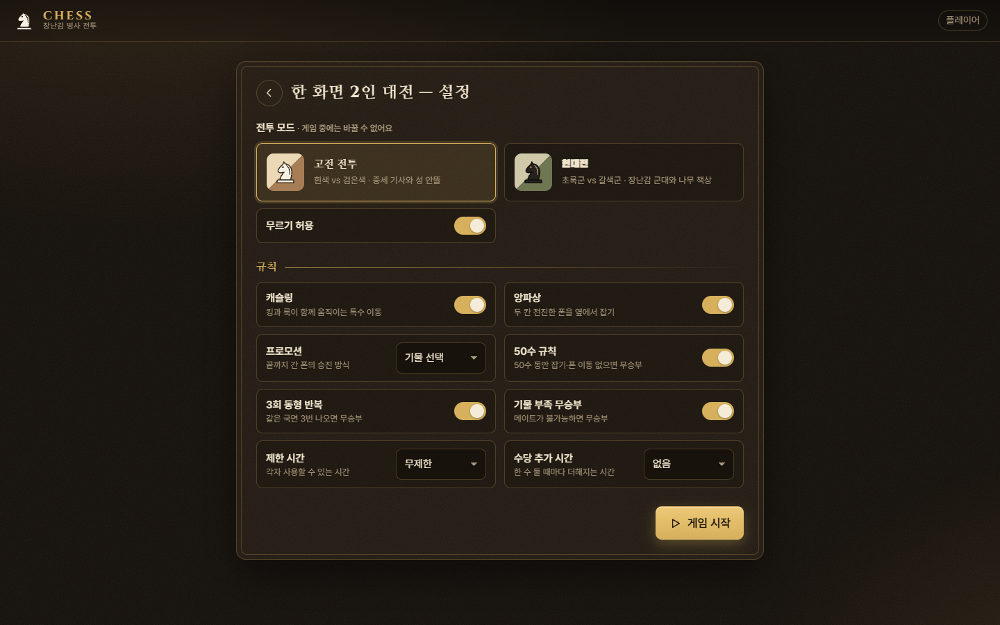
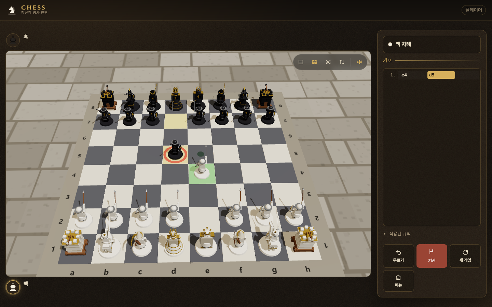
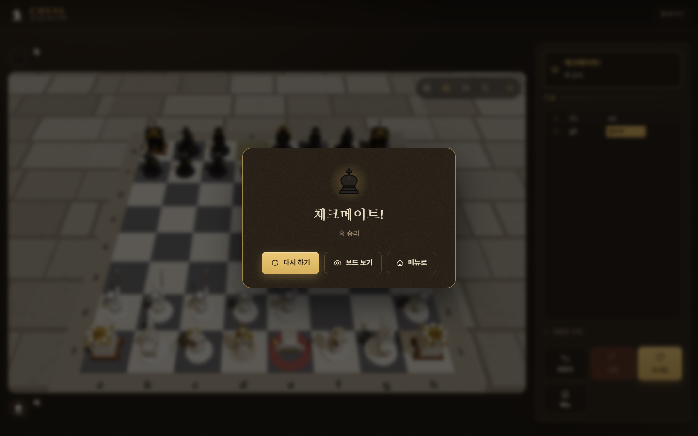
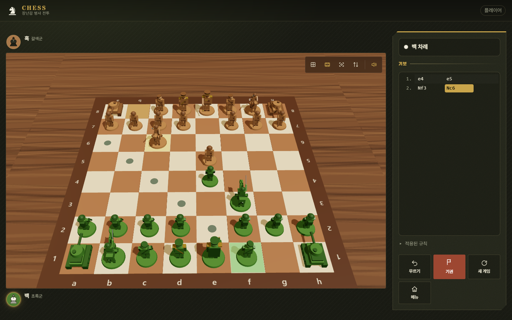

세 가지 대전 방식
난이도 4단계 AI와의 대전, 방을 만들어 참가하는 온라인 2인 대전, 한 기기에서 번갈아 두는 2인 대전.
장난감 병사들이 실제로 싸우는 3D 체스입니다. 정식 체스 규칙에 따라 컴퓨터, 온라인 친구, 같은 화면의 상대와 대전할 수 있고, 기물을 잡으면 병사가 직접 공격합니다.

정식 체스 규칙을 구현한 브라우저 게임입니다. 기물은 3D 장난감 병사로 표현되며, 기물을 잡으면 기물마다 다른 공격 연출이 재생되고 잡힌 병사는 쓰러져 튕겨 나갑니다. 전투 모드는 흰색과 검은색의 중세 기사가 싸우는 고전 전투와, 초록군과 갈색군이 싸우는 현대전 두 가지입니다. 게임을 시작할 때 캐슬링·앙파상·무승부 규칙·제한 시간 같은 규칙을 직접 고를 수 있습니다.
난이도 4단계 AI와의 대전, 방을 만들어 참가하는 온라인 2인 대전, 한 기기에서 번갈아 두는 2인 대전.
캐슬링, 앙파상, 프로모션, 체크메이트·스테일메이트, 50수 규칙, 3회 동형 반복, 기물 부족 무승부.
시작할 때 각 규칙을 켜고 끄고, 프로모션 방식과 제한 시간·수당 추가 시간을 정할 수 있습니다.
창 찌르기, 랜스 돌격, 활, 투석기, 소총, 포격 등 기물마다 다른 공격. 게임이 끝나면 진 쪽 왕(장군)이 쓰러집니다.
모드에 따라 병사 모델, 배경, 효과음과 화면 분위기(양피지·금색 / 군용 카키)가 함께 바뀝니다.
4자리 방 코드로 참가하고 방장이 시작합니다. 모든 수와 시간은 서버가 검증하며, 무승부 제안·재대결을 지원합니다.
| ⚔ 고전 전투 (기본) — 흰색 vs 검은색 | ||
|---|---|---|
| 기물 | 병사 | 공격 |
| 폰 | 창병 | 창 찌르기 |
| 나이트 | 기마 기사 | 랜스 돌격 |
| 비숍 | 궁수 | 활 쏘기 |
| 룩 | 이동식 성탑 | 탑 위 투석기 발사 |
| 퀸 | 여왕 기사 | 검 베기 |
| 킹 | 왕 | 검 내려치기 |
| 🪖 현대전 — 초록군 vs 갈색군 | ||
|---|---|---|
| 기물 | 병사 | 공격 |
| 폰 | 소총병 | 소총 사격 |
| 나이트 | 기병 | 말 타고 돌격, 칼 베기 |
| 비숍 | 저격수 | 조준 후 저격 |
| 룩 | 탱크 | 포격 + 폭발 |
| 퀸 | 장교 | 권총 2연발 |
| 킹 | 장군 | 지휘봉 공격 |





일반 체스와 같이 상대 킹을 체크메이트하면 이깁니다. 기권하거나 제한 시간을 모두 쓰면 집니다. 시간을 다 썼을 때 상대에게 메이트할 기물이 없으면 무승부입니다. 스테일메이트, 그리고 켜 둔 무승부 규칙(50수·3회 반복·기물 부족)에 걸리면 무승부입니다. 온라인 대전에서는 무승부를 제안할 수 있고, 대국 중에 나가면 패배로 처리됩니다.
| 입력 | 동작 |
|---|---|
| 기물 클릭 → 칸 클릭 | 기물 선택과 이동 (3D·2D 공통) |
| 기물 드래그 | 2D 보드에서 끌어서 이동 |
| 마우스 드래그 (3D) | 시점 회전 |
| 마우스 휠 (3D) | 확대 / 축소 |
Esc | 선택 해제, 결과 팝업 닫기 |
| 보드 오른쪽 위 아이콘 | 2D/3D 전환, 연출 속도, 시점 초기화, 보드 뒤집기, 소리 |
| 오른쪽 패널 버튼 | 무르기, 기권, 새 게임, 메뉴 / 온라인: 무승부 제안, 재대결, 대기실, 나가기 |
npm install
npm start브라우저에서 http://localhost:3100 에 접속합니다. 같은 네트워크의 친구는 서버가 터미널에 표시하는 내부 IP 주소로 접속할 수 있습니다.